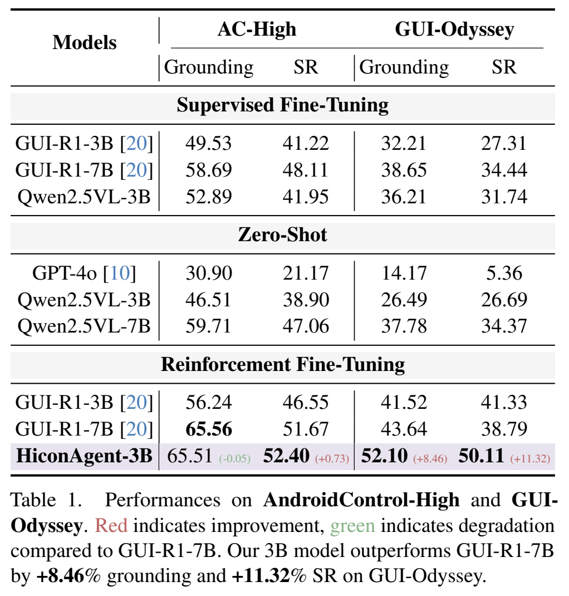
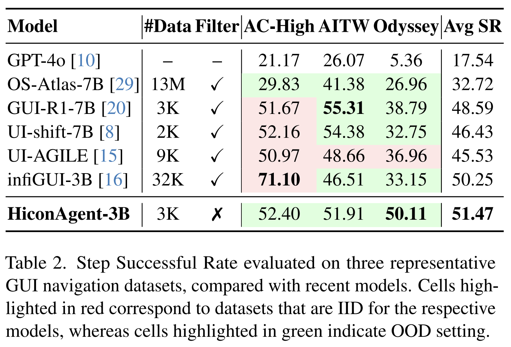

Graphical User Interface (GUI) agents require effective utilization of historical context to perform sequential navigation tasks. While incorporating past actions and observations can significantly improve decision-making, naively using full history leads to excessive computational overhead and potential distraction from irrelevant information. In this work, we introduce HiconAgent, a GUI agent trained with History Context-aware Policy Optimization (HCPO) for effective and efficient utilization of historical information. HCPO explicitly optimizes history usage in both sampling and policy updates by integrating two complementary components: (1) Dynamic Context Sampling (DCS) presents the agent with variable-length histories during sampling, enabling adaptive use of the most relevant historical context to improve sequential decision quality; (2) Anchor-guided History Compression (AHC) refines the policy update phase via a dual-branch optimization strategy, where the compressed branch drops history observations while keeping history actions as information flow anchors. The compressed and uncompressed branches are coupled through a history-enhanced alignment loss to enforce consistent history usage, achieving efficiency with minimal performance degradation. Extensive experiments on mainstream GUI navigation benchmarks demonstrate the strong performance of our model. Despite its smaller size, HiconAgent-3B outperforms GUI-R1-7B by +8.46% grounding and +11.32% step successful rate on GUI-Odyssey, while achieving comparable results on AndroidControl and AITW, with up to 2.47× computational speedup and 60% FLOPs reduction.

|  |  |

In this paper, we present HiconAgent, a history-aware GUI agent trained with History Context-aware Policy Optimization. Through extensive empirical investigations, we first revisited how history is utilized in GUI reinforcement learning agents. Our two key studies revealed that different decision steps prefer different history lengths and historical actions serve as information flow anchors. By pairing DCS and AHC, our model outperforms larger models with fewer FLOPs. These results highlight HiconAgent as a practical path toward lightweight, high-performance GUI agents.